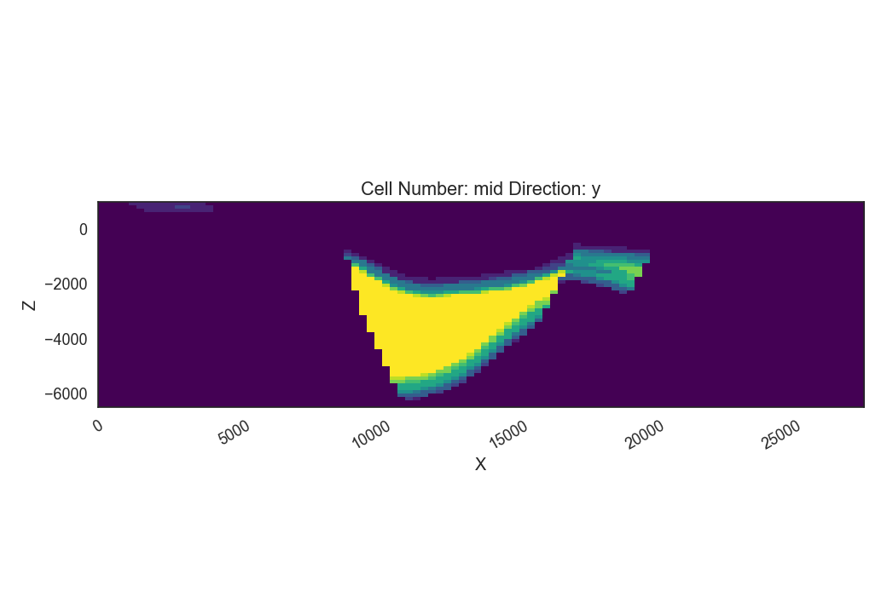
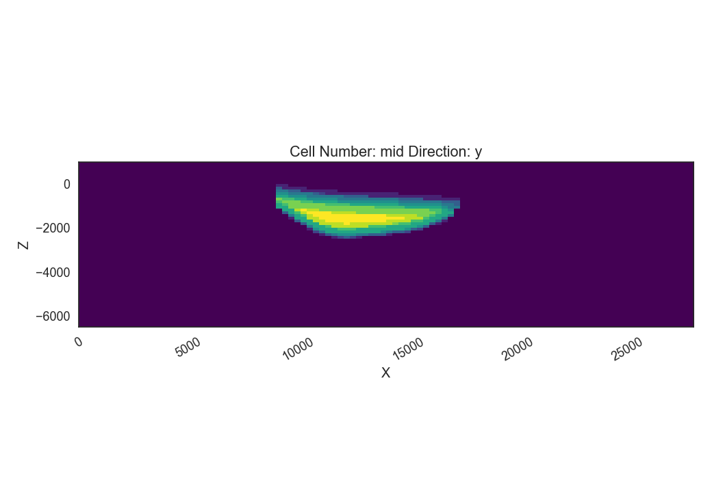
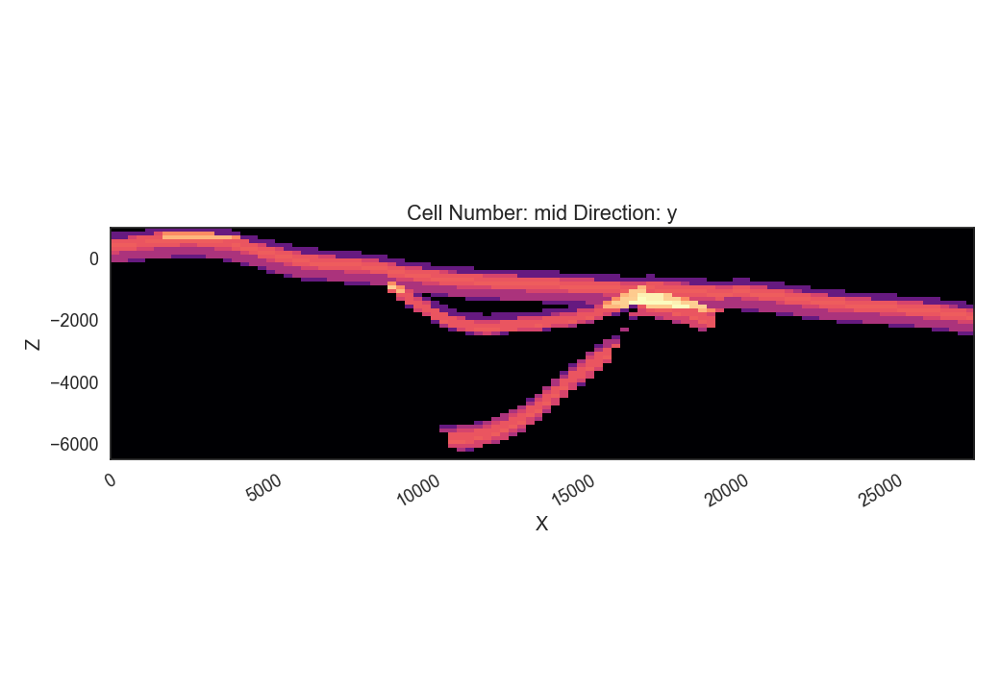

Note
Click here to download the full example code
05 - Monte Carlo rejection and ensemble conditioning¶
The created geological models with gempy were exported as SHEMAT-Suite input files. SHEMAT-Suite [1] is a code for solving coupled heat transport in porous media. It is written in fortran and uses a finite differences scheme in a hexahedral grid. In this example, we will load a heat transport simulation from the base POC model we created in “Geological model creation and gravity simulation”. We will demonstrate methods contained in OpenWF for loading the result file, displaying the parameters it contains and how to visualize these parameters. Finally, we will calculate the conductive heat flow and plot it.
# import libraries
import warnings
warnings.filterwarnings("ignore")
import h5py
import numpy as np
import pandas as pd
import sys
sys.path.append('../../')
import OpenWF.postprocessing as pp
import random
import gempy as gp
from gempy.bayesian.fields import probability, information_entropy
import matplotlib.pyplot as plt
print(f"Run mit GemPy version {gp.__version__}")
Out:
Run mit GemPy version 2.2.9
Rejection algorithm based on random walk¶
We created a tiny ensemble of 10 different SHEMAT-Suite models in the previous step and will use a rejection algorithm to get a posterior ensemble of models. For this, we “borrow” the Metropolis acceptance probability which is defined as:
A different approach would be to assess the missfit (as RMS error) of each realisation.
We will use the second approach for now. As discretization error, we take a value from Elison(2015), \(u_{T-discr} = 0.7\) K, an estimate of error. This error should be estimated to best knowledge.
Using Gauss error propagation, we assess a potential error for the realisations.
u_T = sqrt{big(frac{partial T}{partial x_1}u_1 big)^2 + … + big(frac{partial T}{partial x_n}u_n big)^2}
Literature sources for log-errors:¶
_The lower part of the disturbed log profile (below the cross-over point) was rotated to match these corrected temperatures. In the upper part of the profile, the same correction as for method A was applied. The quality of this correction method strongly depends on the correct calculation of the lowermost profile temperatures. According to Förster (2001), most of the corrected tem-peratures have errors of ± 3 to 5 K._ https://doi.org/10.1186/s40517-020-00181-w
_The effective accuracy of commercial temperature logs is ±0.5ºC (Blackwell and Spafford, 1987)._ http://www.sprensky.com/publishd/temper2.html
_More normal accuracies are +- 0.25 °C over 0-200 °C_ Keith Geothermal Energy lecture
For errors as a function of e.g. logging speed, measurement response time etc, look https://doi.org/10.1016/j.petrol.2020.107727
Model preparation¶
To see, where our data points are situated, we load the model topography and plot the position of gravity stations and temperature boreholes:
# import DTM
dtm = np.load('../../models/Graben_base_model_topography.npy')
# load base model
model_path = '../../models/2021-06-04_POC_base_model/'
geo_model = gp.load_model('POC_PCT_model',
path=model_path, recompile=False)
# get delx and dely of the model, so cell sizes
delx = geo_model._grid.regular_grid.dx
dely = geo_model._grid.regular_grid.dy
delz = geo_model._grid.regular_grid.dz
# import gravity data and borehole locations
g_data = pd.read_csv('../../models/2021-06-16_grav_of_POC_base_model.csv')
bhole = np.array([[31, 14],
[78, 22],
[53, 34],
[49, 44]])
# plot the map
fig = plt.figure(figsize=[15,7])
cs = plt.contourf(dtm[:,:,0], dtm[:,:,1], dtm[:,:,2],20, cmap='gist_earth')
plt.contour(dtm[:,:,0], dtm[:,:,1], dtm[:,:,2],10, colors='gray', zorder=1)
plt.scatter(g_data['X'], g_data['Y'], marker='s', s=150, c='brown', edgecolor='k',
label='gravity stations', zorder=2)
plt.scatter(bhole[:,0]*delx, bhole[:,1]*dely, marker='^', s=200, c='k', label='boreholes',
zorder=3)
plt.colorbar(cs, label='elevation [m]')
plt.legend(frameon=True)
plt.xlabel('X [m]')
plt.ylabel('Y [m]');
Out:
Active grids: ['regular']
Active grids: ['regular' 'topography']
Text(119.30555555555556, 0.5, 'Y [m]')
Load the Lithology Blocks¶
First let’s load the lithology block of all 10 models, looking at the probabilities of the graben unit and at the model entropy.
# load and calculate Probability and Entropy using GemPy bayesian field functions
ens = np.load('../../data/outputs/MCexample_10realizations.npy')
prior_prob = probability(ens)
prior_entr = information_entropy(prior_prob)
layer = 5
# upper filling
gp.plot_2d(geo_model,
show_lith=False, show_boundaries=False, show_data=False,
regular_grid=prior_prob[layer],
kwargs_regular_grid={'cmap': 'viridis',
'norm': None})
# lower filling
gp.plot_2d(geo_model,
show_lith=False, show_boundaries=False, show_data=False,
regular_grid=prior_prob[layer-1],
kwargs_regular_grid={'cmap': 'viridis',
'norm': None});
p2dp = gp.plot_2d(geo_model,
show_lith=False, show_boundaries=False, show_data=False,
regular_grid=prior_entr,
kwargs_regular_grid={'cmap': 'magma',
'norm': None,
'colorbar': True}
)
- 
- 
- 
The Information entropy plot shows where the maximal Uncertainty is in our model, i.e. where the contacts are between the graben units and the basement. A lot of uncertainty is visible in the right part of the model (between around 16000 and 20000), where the main graben unit may or may not be present.
Gravity rejection¶
In a first stage, we take a look at the gravity signal of each realization. The gravity signal is “recorded” at each of the squares you see in the plot above. Comparing the recorded gravity signals of each realization with the ones of the base model (which we regard as the “true” observations), we can differentiate between fitting and non-fitting ensemble members.
g_simu = pd.read_csv('../../data/outputs/MCexample_10grav.csv')
g_simu.head()
Remember the \(u_T\) from previously? Here, we estimate it from an artificially superimposed noise on the data. As our “observed data” is actually just the simulated gravity from the base model, it does not have noise. That’s why we artificially add it. This would not be needed with real data.
add_noise = True
if add_noise==True:
np.random.seed(27)
noise = np.random.normal(0, 1., size=15)
g_data_noise = g_data.copy()
g_data_noise['grav'] = g_data_noise['grav'] + noise
print(np.mean(noise))
u_g = np.mean(noise)
elif add_noise==False:
u_g = 0.5
#calculate stdeviation and mean of the prior ensemble
g_simu_stdev = g_simu.std(axis=1)
g_simu_mean = g_simu.mean(axis=1)
fig = plt.figure(figsize=[15,7])
cs = plt.contourf(dtm[:,:,0], dtm[:,:,1], dtm[:,:,2],20, cmap='gist_earth')
plt.contour(dtm[:,:,0], dtm[:,:,1], dtm[:,:,2],10, colors='gray', zorder=1)
cs = plt.scatter(g_data['X'], g_data['Y'], c=g_simu_stdev, marker='s',
s=100, zorder=2, cmap='magma')
plt.xlabel('x (m)')
plt.ylabel('y (m)')
plt.colorbar(cs, label='standard deviation');
Out:
0.32409402260706643
<matplotlib.colorbar.Colorbar object at 0x000001E0DA0EB040>
In the plot above, we see the distribution of the standard deviation of our gravity stations, so already where the most “sensitive” stations are. For a better performing rejection, it may be suitable to remove redundant stations, i.e. once with a very low standard deviation. Now, for the MonteCarlo rejection step, we use an implemented method rejection, which goes through the RMSE vector of our realizations and compares the RMSE of each realization. The ones with relatively lower RMSE will get chosen:
Out:
5 realizations were accepted.
Accepted realizations are [1, 3, 5, 6, 9].
The RMSE of our realizations is:
Out:
Real_0 5.739242
Real_1 4.793879
Real_2 6.039006
Real_3 4.892107
Real_4 6.409709
Real_5 5.378784
Real_6 5.324433
Real_7 6.086722
Real_8 5.820290
Real_9 6.086255
dtype: float64
Having accepted some of the initial 10 realizations, we can again calculate the probability field for different units and the model entropy:
accepted_reals = ens[accept_g, :]
grav_prob = probability(accepted_reals)
grav_entr = information_entropy(grav_prob)
p2dp = gp.plot_2d(geo_model,
show_lith=False, show_boundaries=False, show_data=False,
regular_grid=grav_entr,
kwargs_regular_grid={'cmap': 'magma',
'norm': None}
)
Comparing this to the Entropy plot from above, we see that the overall entropy is reduced in many parts of the model. Also the “thickness” of the areas with increased entropy is reduced, hinting at a sucessful reduction of depth uncertainty for, e.g. the graben units. We now go ahead and save the lithology blocks of the accepted realizations, as these could now be used for subsequent heat tranpsort simulations.
np.save('../../data/outputs/lith_blocks_accepted.npy', accepted_reals)
np.savetxt('../../data/outputs/accepted_realizations_ID.txt', accept_g, fmt='%d')
Remember how in a previous tutorial step (“Create SHEMAT-Suite models”), we created SHEMAT-Suite models for the whole 10 realizations, i.e. for the whole _apriori_ ensemble? Following the workflow with sequentially constraining the model space, we wouldn’t actually need to create a SHEMAT-Suite model for every ensemble member, but just for the accepted realizations. Which means, in this case:
print(f"Realizations accepted: {accept_g}.")
Out:
Realizations accepted: [1, 3, 5, 6, 9].
This means, we’d only need to run heat-transport simulations for the realizations accepted by the gravity rejection step.
Temperature rejection¶
The black triangles in the Map plot are the locations from 4 different boreholes in the model. Temperature data from these boreholes is now used in a similar fashion to further reduce the model to realizations, which now fit both the gravity and the temperature signal.
Similarly to the previous tutorial, where we saved the base model as a SHEMAT-Input file, we now do the same with the accepted realizations:
The openWF package hase one plotting function for displaying arbitary slices through the SHEMAT model, as presented in a previous tutorial step. Here, we have a look at the temperature field of the base model:
fig = plt.figure(figsize=[15,7])
pp.plot_slice('../../models/SHEMAT-Suite_output/SHEMAT_PCT_base_model_temp_final.h5',
parameter='temp', cell_number=25, direction = 'y', model_depth=6500)
Similar to the previous step, where we estimated \(u_g\), we now have to estimate \(u_T\) for temperature. There we use some literature estimations for errors introduced in measurements of borehole temperatures:
# define uT
T_error = 0.25 # temperature error tool accuracy
s_error = pp.fahrenheit_to_celsius(1.25, difference=True) # sensor response time of 2 sec and 1 year after drilling
l_error = pp.fahrenheit_to_celsius(1.25, difference=True) # logging speed of 20/ft after 1 year
d_error = 1.0 # estimated temperature error by discretization
u_T = np.sqrt(T_error**2 + s_error**2 + l_error**2 + d_error**2)
print(u_T)
Out:
1.4237296698599444
SHEMAT-Suite, in a specific operation mode, writes ASCII files, ending on .dat. In these files, SHEMAT-Suite provides information about simulated variables (in our case temperature) compared to observed ones. OpenWF has a routine to read in these .dat files and display them as a pandas dataframe:
pp.load_inv('../../models/SHEMAT-Suite_output/POC_base_model_final.dat')
Now let’s load all these simulation files from our ensemble. As we already simulated all 10 realizations of the apriori ensemble, we load all 10 dat-files. However, in a sequential conditioning workflow, we’d just have the simulations from realizations accepted by the gravity conditioning step.
The diffs array we now created consists of the stacked 9th columns of each .dat file in the accepted realizations. Which means, as we have in total 5 accepted realizations, that array has 5 rows and 128 columns (i.e. the number of measuring points).
As we already have the differences between observed and simulated values here (so difference between the columns calc and obs in the dataframe above), we do not need to use the calc_rmse method from above. Instead, we calculate it directly drom the diffs array, by first calculating the Sum of Squared Residuals (SSR) and then the RMSE:
We can now continue to work with the rmse array, but for having a complete information array, we stack it to the diffs array. This can be neat, e.g. for storing the diffs and RMSE in one file. When we stack the calculated parameters, we’ll end up with an array with 130 columns. The first 128 columns are the differences between observed and calculated values, the 129th the SSR, and the 130th column the RMSE.
To have information, which realizations (after constraining from gravity) these differences belong to, we finally add a 131st column, containing the realization number:
total_diffs = np.column_stack((diffs,ssr,rmse_T))
# add index to the realizations
ind = np.array(range(total_diffs.shape[0]))
total_diffs = np.column_stack((total_diffs,accept_g))
print(total_diffs.shape)
Out:
(5, 131)
Optionally, we can then save it in an ASCII file:
np.savetxt('../../models/SHEMAT-Suite_output/differences_RMSE.txt', total_diffs, fmt='%.4f')
Rejection sampling Temperature¶
Similar to the gravity rejection step before, we now work with the temperature RMSE to reject samples. However, this step might be somewhat ambigous: Because we’re only looking at conductive heat transport in this tutorial example, the sole difference between realizations will be based on the thickness of the geological unit with its thermal conductivtiy. As thermal conductivity does not vary as much as, let’s say permeabiliy, the effect on the overall temperature field will likely be small.
Considering the estimated error above, the error might as well be in the same region as the differences of the simulations, yielding an unsatisfactory rejection:
Out:
2 realizations were accepted.
[2, 4]
To show, what the simple implemented rejection method does, we write it out in the following code segment. We chronologically go through the rmse array, as this is the result of a simple MC simulation. This means, this start from 1 to N can be used here, if samples generated are already in a random order and not correlated. That is usually the case with GemPy exports to SHEMAT-Suite.
# First we fix the random seed of this Jupyter cell to the same as the previous method
random.seed(1)
# The RMSE is in the 130th column. With Python indexing starting at 0, this means we choose column 129
col = 129
# We choose a reference. There are two options in the implemented method.
# One, to start from the median value, as shown here, one for starting at the first realization.
Ref = np.median(total_diffs[:,col])
accept = []
P = []
k=0
# then we iterate through the different RMSE values
for i in range(total_diffs.shape[0]):
# if the current iteration has a smaller RMSE then the reference, we take it and mark it as the
# new reference
if total_diffs[i,col] < Ref:
Ref = total_diffs[i,col]
accept.append(i)
# else we only accept it with a certain probability, defined by the exponential in the equation
# at the beginning
elif random.random() < np.exp(-(total_diffs[i,col] - Ref)/(u_T)):
P.append(np.exp(-(total_diffs[i,col] - Ref)/(u_T)))
Ref = total_diffs[i,col]
accept.append(i)
print(f"Accepted realizations are: {accept}")
Out:
Accepted realizations are: [2, 4]
With the model space now reduced to three models, we can calculate for a final time the probability of the model units and entropy of the model:
accepted_reals_T = accepted_reals[accept, :]
grav_T_prob = probability(accepted_reals_T)
grav_T_entr = information_entropy(grav_T_prob)
p2dp = gp.plot_2d(geo_model,
show_lith=False, show_boundaries=False, show_data=False,
regular_grid=grav_T_entr,
kwargs_regular_grid={'cmap': 'magma',
'norm': None}
)
The plot above shows a strong “binary” entropy field. Entropy is maximum (bright color) especially with respect to the depth of the post-graben unit interface. The area of interest, however, the depth of the graben is now significantly reduced. We see, that the two resulting models do not differ that much with respect to graben depth, but only depth of the post-graben unit.
Out:
So, the final realizations which remain from the original [5, 9]!
Total running time of the script: ( 0 minutes 4.513 seconds)